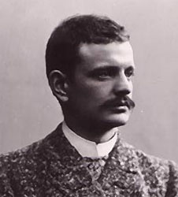
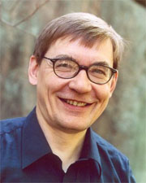
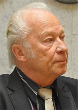
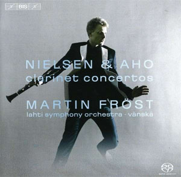
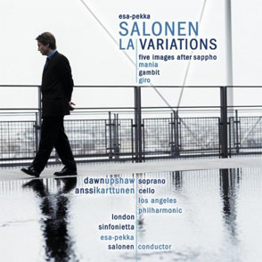
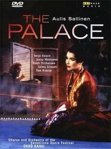
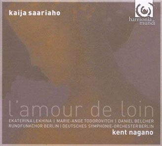
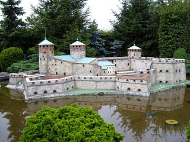

A vol de mouette, Helsinki n'est situé qu'à 100 km de Tallin d'où on ne sera pas surpris d'apprendre que les Finlandais sont aussi attachés à leur culture musicale que les Estoniens. Leur plus grand compositeur, Jean Sibelius (1865-1957), y fait l'objet d'un véritable culte. La chronique people finlandaise l'a même placé en 8ème position dans le classement des 100 personnalités locales les plus importantes.
Ceci n'est nullement anecdotique : j'ai cherché en vain Rameau, Berlioz, Debussy et, fatalement, encore moins Messiaen dans le classement homologue français. Notez, entre parenthèses, que Henri Poincaré (1854-1912) n'y figure pas davantage, il est pourtant le seul qui pourrait contester à Carl Friedrich Gauss (1777-1855) la place du plus grand mathématicien de tous les temps !

Jean Sibelius
L'histoire de Sibelius est plutôt tragique : de nature dépressive, cet immense artiste s'est tout simplement arrêté de composer vers 1926, démoralisé par un modernisme ambiant auquel il ne comprenait rien et ulcéré par les propos d'une sotte critique latine pas toujours tendre avec lui. La quatrième symphonie de Sibelius est pourtant d'une éternelle modernité. Je vous recommande la version de Karajan qui, bien que n'ayant pas une goutte de sang finlandais dans les veines, a compris Sibelius comme nul autre (sauf Bernstein peut-être). Vous admirerez au passage le son des cordes que le chef a obtenu de "sa" Philharmonie de Berlin dans cet extrait du premier mouvement . L'oeuvre de Sibelius fait l'objet d'une intégrale en cours chez BIS.
Dans l'ombre de Sibelius
Avant Sibelius, la musique savante finlandaise fut rare et anecdotique. L'après-Sibelius fut, par contre et sans discontinuer, riche en talents multiples. On notera que les symphonies de ce Maître - aux USA, elles sont les plus jouées après celles de Beethoven - suscitèrent beaucoup de vocations :
Erkki Melartin (1875-1937) a écrit une oeuvre davantage tournée vers Mahler que vers Sibelius (Symphonies n°1, n°2, n°3, n°5, n°6, Concerto pour violon). C'est d'ailleurs Melartin qui a introduit la symphonie mahlérienne en Scandinavie, lors des nombreux concerts qu'il y a dirigés. Sachez encore que si vous épousez un(e) finlandais(e), vous aurez droit à sa Marche nuptiale, ce qui vous changera de celle de Mendelssohn.
Ernest Pingoud (1887–1942) est un compositeur cosmopolite finlandais (d'origine alsacienne, ceci explique cela), né à Saint-Pétersbourg où il a fait ses études, sous la direction de Glazounov et Rimski-Korsakov. Sa musique - à découvrir et surtout à éditer d'urgence ! - est remarquable, jugez plutôt : La face d'une grande Ville, Symphonies n°1 et n°2, Concerto n°2, pour piano. Le label Ondine a consacré un CD à la musique de Pingoud, qui confirme en tous points le bien qu'il faut en penser.
Leevi Madetoja (1887-1947) est resté fidèle à l'idiome national dans ses 3 symphonies et cela devrait vous inciter à les écouter (Symphonies n°1, n°2, n°3). Victime d'une panne progressive d'inspiration, il peina à achever une 4ème symphonie qui n'a existé que sur le papier, l'auteur s'étant fait dérober le manuscrit lors d'un voyage ferroviaire en France. Le voleur ne l'a jamais restitué et, à part des cocottes, on se demande ce qu'il a bien pu en faire.
Väinö Raitio (1891-1945) s'est montré nettement plus aventureux dans Trilogie "Antigone", opus 23 (à découvrir !), Fantasia estatica, opus 21 ou cette musique de ballet, Vesipatsas, d'une réelle distinction, une qualité pas si fréquente dans le genre. Un musicien nettement sous-évalué.
Aarre Merikanto (1893-1958) (Concerto n°3, pour piano) fut parmi les premiers, en Finlande, à rompre avec le romantisme, vers 1920. Dix années de modernisme ont plombé la diffusion de sa musique dans son pays, seul l'opéra Juha finissant par émerger. Merikanto, lassé d'une telle incompréhension, revint 10 ans plus tard vers un néo-classicisme insatisfaisant qu'il finit par renier en détruisant un grand nombre de partitions.
Uuno Klami (1900-1961),
contrairement à Sibelius, ne fut absolument pas contrarié par le modernisme ambiant. Il a écrit, pendant toute sa vie, la musique simplement immédiate qu'il avait envie d'écrire. Son absence de complexes était telle qu'il a défrayé la chronique lors de la publication de sa suite d'orchestre "Sea Pictures"
(1930). Je ne vous ferai pas l'injure de préciser le problème : le thème avait quelque chose de déjà entendu et l'emprunt à Ravel (Boléro 1928) était manifeste. Les temps ont bien changé, Madonna en sait quelque chose : on emprunte le quart du tiers aujourd'hui et on se ramasse un procès.
Einar Englund (1916-1999) n'a jamais caché son admiration pour les grands classiques du 20ème siècle, Stravinsky, Bartok et Schostakovitch (Symphonies n°1, n°3, Concerto n°1, pour piano). Son enseignement, réticent envers davantage de modernité, l'a un temps marginalisé mais on redécouvre aujourd'hui son oeuvre, largement enregistrée chez Ondine et Finlandia.
L'époque contemporaine

Kalevi Aho

Aulis Sallinen
L'époque contemporaine est d'une richesse incroyable : peu de pays peuvent se targuer d'une vie musicale aussi intense et diversifiée. Les compositeurs les plus en vue ont pour noms, Einojuhani Rautavaara (1928- ), Aulis Sallinen (1935- ), Kalevi Aho (1949- ), Kaija Saariaho (1952- ), Magnus Lindberg (1958- ) et Esa-Pekka Salonen (1958- ). Les censeurs garants d'une forme d'orthodoxie musicale vous diront que seuls Lindberg et Salonen, plus ou moins issus du courant spectral (celui qui se concentre sur une reconstruction fréquentielle des timbres avec des moyens acoustiques ou électroniques), sont à prendre en considération mais je proteste, du moins je tempère : après de la disparition du russe Alfred Schnittke en 1998, c'est, à mon humble avis, Einojuhani Rautavaara qui préside le cercle fermé des grands compositeurs vivants, de plus il en est le Doyen. Son importance est telle qu'il a droit, par ailleurs sur ce site, à un portrait particulier, auquel je vous renvoie.
Aulis Sallinen compose le genre de musique que le mélomane lambda apprécie. Il a écrit un tube finlandais, Marche funèbre de Hintrikki Peltoniemi, mais, chez nous, il n'est connu que des initiés. Ses 8 symphonies sont disponibles chez CPO mais les choses se compliquent avec ses opéras (Ratsumies - L'homme aux chevaux - , Punainen viiva - La ligne rouge - , Kuningas lähtee Ranskaan - Le Roi se rend en France -, Kullervo, Palatsi - Le Palace, disponible en DVD et de fait incontournable - , Kuningas Lear - Le roi Lear).
Kalevi Aho est un musicien de grande valeur qui a commencé par composer six symphonies dans un idiome intelligible mais nullement complaisant. Pensant avoir épuisé les ressources de la forme symphonique, il lui fit ses adieux en 1980 ... avant de se raviser sept ans plus tard. Il en est actuellement à sa 16ème partition du genre ! Il est vrai qu'il a revu sa manière de composer et vous en tiendrez compte lorsque vous comparerez les styles d'écriture "avant la 7ème" (Symphonies n°1, n°2, n°4) et "après la 6ème" (Symphonies n°7, n°8, n°14, n°15, n°16). Pergamon est une oeuvre singulière et ambitieuse, pour 4 groupes instrumentaux, orgue et 4 récitants. Aho excelle encore dans le genre du concerto, tuba, contrebasson, saxophone, violoncelle : le Concerto pour clarinette est à découvrir d'urgence ! J'allais oublier deux Sonates pour accordéon qui vous changeront les idées. L'oeuvre de Aho est très présente au catalogue BIS.
Katia Saariaho est installée en France mais elle a heureusement gardé l'esprit d'indépendance qui caractérise ses compatriotes. En fouillant le catalogue jpc, vous découvrirez un vaste choix d'œuvres. Toutes n'étant pas d'accès facile, commencez par Orion datée de 2002. Lonh marie astucieusement la voix et l'électronique. Quant à L'Amour de Loin, Grawemeyer Award 2003, c'est l'un des meilleurs opéras écrits ces dernières années.
Magnus Lindberg est un des rares musiciens finlandais à avoir droit de cité dans les cénacles ouest-européens : son oeuvre est nettement plus difficile d'accès voire agressive (Engine, Feria), aussi aurez-vous intérêt à bien choisir votre angle d'attaque, en commençant, par exemple, par son accessible Concerto pour clarinette.
Esa-Pekka Salonen est surtout connu comme chef principal de l'orchestre de Los Angeles. Il l'a quitté, en 2009, pour rejoindre le Philharmonia Orchestra. Reconnaissant il lui a dédié LA Variations (Début, Fin). Salonen démontre le même talent à la table de composition qu'à la direction d'orchestre. Jugez-en plutôt avec ces extraits de Helix, Insomnia, Nyx et de Foreign Bodies. Il vient de recevoir le Grawemeyer Award pour son tout récent Concerto pour violon, un génie aasurément.

Kalevi Aho

Esa-Pekka Salonen

Sallinen : The Palace

Saariaho : L'Amour de loin
Voici quatre enregistrements précieux qui témoignent de l'extrême vitalité de la musique finlandaise dont deux opéras parmi les meilleurs créés récemment.
La richesse musicale d'un pays se mesure aussi à ses réserves de moindres talents et la Finlande n'en manque pas. Vous en jugerez en écoutant les extraits suivants, sélectionnés au hasard des recherches, suivez le guide ... :
Joonas Kokkonen (1921-1996) est surtout connu pour son Requiem mais aussi ses symphonies, par exemple, la n°4. Son opéra le plus célèbre, The last Temptations, a fait les beaux jours des scènes finlandaises. Il n'est pas si facile de trouver des illustrations sonores mais voici un beau Lux Aeterna, pour orgue.
Erkki Salmenhaara (1941- ) appartient au courant de la nouvelle simplicité. Le Bateau ivre , évoquant l'univers de Gavin Bryars,
figure sur un beau CD paru chez Ondine qui propose également, dans la même veine, La Fille en Mini-jupe.
Pehr Henrik Nordgren (1944-2008) a tenté une synthèse difficile de styles fort divers, dodécaphonique, oriental (sa moitié était japonaise) et populaire (The Thinker et Portraits of Country Fiddlers). Il est l'auteur de 8 symphonies, requérant un minimum de concentration, souvent récompensée (Symphonie n°8). La Symphonie pour cordes est le fruit d'une longue collaboration avec l'Ostrobothnian Chamber Orchestra.
Leif Segerstam (1944- ) est un personnage singulier, hyperactif et controversé : il compose des symphonies par dizaines (leur nombre dépasse actuellement 270 mais il croît plus vite que mes mises à jour !). Les derniers opus font état de l'intervention d'un hasard contrôlé, chaque pupitre se débrouillant pour jouer et reprendre ses sections comme il l'entend, si bien que le chef n'est plus absolument indispensable. Voici quelques échantillons : Symphonies n°212, 224 et 253.
Eero Hämeenniemi (1951- ) est fort peu connu et le serait encore moins sans la parution, chez Ondine, d'un CD reprenant ses deux premières symphonies et le Concerto pour violon.
L'oeuvre de Jouni Kaipainen (1956- ) est également partiellement éditée chez Ondine. J'ai noté un CD plutôt curieux, coinçant son 3ème Trio à clavier (plages 5 à 9) entre des oeuvres homologues de Beethoven, une technique comme une autre de promotion - et de vente !- de la musique actuelle. Voici encore son Concerto pour cor, opus 61.
Kimmo Hakola (1958- ) est un musicien particulièrement précieux qui intègre sans concession des rythmes trépidants, parfois venus de loin, comme dans ces concertos pour clarinette, piano ou guitare (Notez au passage la précision de la direction du très jeune Santtu-Matias Rouvali).
Juhani Nuorvala (1961- ) a suivi une formation on ne peut plus classique, y compris à Paris (chez Tristan Murail) et à New-York (chez David Del Tredici). Il a cependant opté pour la diversité compositionnelle voire une franche postmodernité comme dans ces Quatuor à cordes 1 & 2 qui s'abreuvent à toutes les sources, y compris pop(ulaires). Nuorvala bricole également avec l'électronique, déformant au passage la Toccata de Bach, en (LS)D mineur.
Seppo Pohjola (1965- ) est notamment l'auteur de ce Quatuor n°3 et d'un opéra de chambre d'un légèreté inhabituelle pour l'époque, The Closet.
Les fidèles des finales du Concours Reine Elisabeth de Belgique se souviennent de Uljas Pulkkis (1975- ) : son oeuvre, The Tears of Ludovico, a remporté le concours de composition, devenant par là même l'oeuvre imposée aux finalistes de la session de piano 1999. Phénomène rare dans les annales de l'épreuve, l'oeuvre survit, figurant au répertoire du pianiste Marc-André Hamelin. Voici encore une belle Chacone pour piano solo et un CD proposant sa Symphonie "Dali". Un CD est paru chez Ondine proposant On the Crest of Waves, Tales of Joy, Passion and Love et Verna Bloom.

Le château d'Olavinlinna
La Finlande a la culture de l'opéra : aucun pays ne possède autant de compagnies d'opéra, nationales ou provinciales, ni n'encourage avec autant de conviction la création d'œuvres nouvelles, 14 rien qu'en l'an 2000 et cela continue !
Le Festival de Savonlinna est mondialement célèbre. Savonlinna est une petite ville perdue en hiver mais en été, pendant quelques semaines, son château d'Olavinlinna prête son décor naturel et magique à des représentations qui font date. On y a créé quantité d'œuvres 100% finlandaises, de Rautavaara bien sûr, mais aussi de Sallinen, Kokkonen et Merikanto, pour ne garder que les plus connus.
Voici quelques points de repères incontournables :
Je suis quelque peu dépité de ne pas pouvoir vous proposer d'extraits musicaux de l'opéra, Paavo Nurmi, écrit par Tuomas Kantelinen (1969 - ) et super produit (un millier de figurants !) au stade olympique d'Helsinki en 2000 en hommage au coureur de fond bien connu des chroniqueurs sportifs. Il existe un film, diffusé en son temps par la chaîne Arte, qui témoigne de l'événement mais j'ai perdu sa trace.
Ce qui est remarquable, en Finlande, c'est la totale coexistence pacifique de tous les styles musicaux, y compris au niveau de l'enseignement. Classicisme, Romantisme ou Modernismes de tous bords se côtoient sans heurts. Nos pays occidentaux feraient bien de prendre exemple.
La musique finlandaise a la chance d'être défendue par quelques très grands chefs qui ont pour noms, Esa-Pekka Salonen, Jukka-Pekka Saraste, Leif Segerstam, Osmö Vanska et Mikko Franck. Ce dernier est bien connu du public Bruxellois puisqu'il a tenté, pendant cinq ans, de redresser l'Orchestre National de Belgique avant d'aller se refaire une santé ailleurs.
Deux très grandes voix de basses ont enchanté les scènes lyriques (inter)nationales : Matti Salminen (1945-) et Martti Talvela (1935-1989), tous deux plus vrais que nature dans le rôle de Boris Godounov. Ils ont été invités partout dans le monde y compris au Festival de Bayreuth. Chez les dames, Karita Mattila (ici dans Luonnotar de Sibelius) est internationalement reconnue.
Evidemment les chorales finlandaises sont légions comme dans tout pays nordique qui se respecte. On n'oubliera pas davantage les orchestres (de chambre), ceux des festivals d'Helsinki ou de Tampere, de la Radio Finlandaise, le Sinfonia Lahti ou l'Ostrobothnian Chamber Orchestra.
Deux labels typiquement finlandais, Ondine et Finlandia, assurent une large production et diffusion de la musique nationale. La firme suédoise BIS, pas chauvine pour un sou, leur donne régulièrement un sérieux coup de main. Les CD Ondine sont particulièrement faciles à découvrir depuis que le label a été repris par le groupe Naxos.